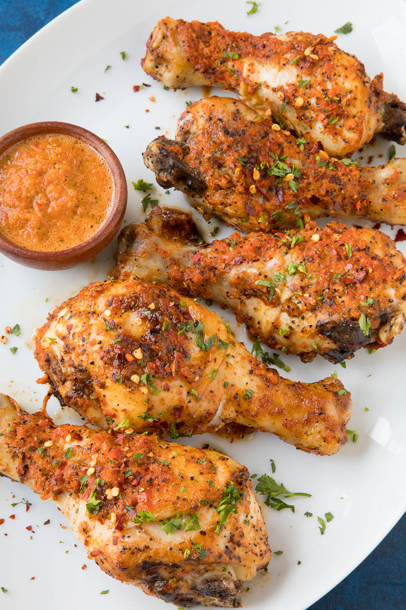

Chicken Peri-Peri

Peri Peri Chicken is a flavorful meal of any cut of chicken that is marinated in and also served with a homemade peri peri sauce, a hot pepper sauce from south Africa. If you've never enjoyed south African Peri Peri Chicken, it's definitely a treat, especially with chicken legs. I love the leg part of the chicken. They're always tender and juicy, and they're pretty darned easy to cook.
Ingredients
- FOR THE PERI PERI CHICKEN
- 6 chicken legs
- 1 tablespoon smoked paprika
- 1 tablespoon garlic powder
- Salt and pepper to taste
- FOR THE PERI PERI MARINADE INGREDIENTS
- 1 pound red chilies chopped African Birds Eye peppers are
traditional, but you can sub with red peppers available to you
- 4 cloves garlic chopped
- 1 teaspoon smoked paprika you can sub in other chili powders
- 1/2 cup chopped cilantro
- 1/4 cup chopped basil
- 1/2 cup olive oil or vegetable oil
- Juice from 1 lemon
- Salt to taste (and black pepper, if desired)
- FOR SERVING: Chopped parsley, spicy chili flakes
Steps
- For the peri peri sauce, add the peppers, garlic, paprika, cilantro and basil to a food processor. Process until well mixed.
- Drizzle in the olive oil while continuing to process until the mixture thickens up.
- Use half of the peri peri sauce to cover the chicken. Toss them together to get the chicken legs nicely coated.
- Bake the chicken for 35-40 minutes, or until the chicken is cooked through. They should measure 165 degrees F internally when measured with a meat thermometer. I like to use my ThermoPop meat thermometer from ThermoWorks (I'm an affiliate). Works great! Cooking time can vary, so be sure to check your temperatures.
- Sprinkle with fresh herbs and spicy chili flakes. Serve! So good baked in the oven.